Getting Started with Entity Framework 6 Code First using MVC 5
The Contoso University sample web application demonstrates how to create ASP.NET MVC
5 applications using the Entity Framework 6 and Visual Studio 2013. This tutorial uses the Code First workflow. For information about how to choose between Code First, Database First, and Model First, see
Entity Framework Development Workflows.
The sample application is a web site for a fictional Contoso University. It includes functionality such as student admission, course creation, and instructor assignments. This tutorial series explains
how to build the Contoso University sample application.
You can
download the completed application.
A Visual Basic version translated by Mike Brind is available: MVC 5 with EF 6 in Visual Basic on the Mikesdotnetting site.
Software versions used in the tutorial
The tutorial should also work with
Visual Studio 2013 Express for Web
or Visual Studio 2012. The VS 2012 version of the Windows Azure
SDK is required for Windows Azure deployment with Visual Studio 2012.
Tutorial versions
For previous versions of this tutorial, see the EF 4.1 / MVC 3 e-book
and
Getting Started with EF 5 using MVC 4.
Questions and comments
Please leave feedback on how you liked this
tutorial and what we could improve in the comments at the bottom of the page. If you have questions that are not directly related to the tutorial, you can post them to the ASP.NET Entity Framework forum, the Entity Framework and LINQ to Entities forum,
or StackOverflow.com.
If you run into a problem you can’t resolve,
you can generally find the solution to the problem
by comparing your code to the completed project that you can download. For some common
errors and how to solve them, see Common errors, and solutions or workarounds for them.
The Contoso University Web Application
The application you'll be building in these tutorials is a simple university web site.
Users can view and update student, course, and instructor information. Here
are a few of the screens you'll create.
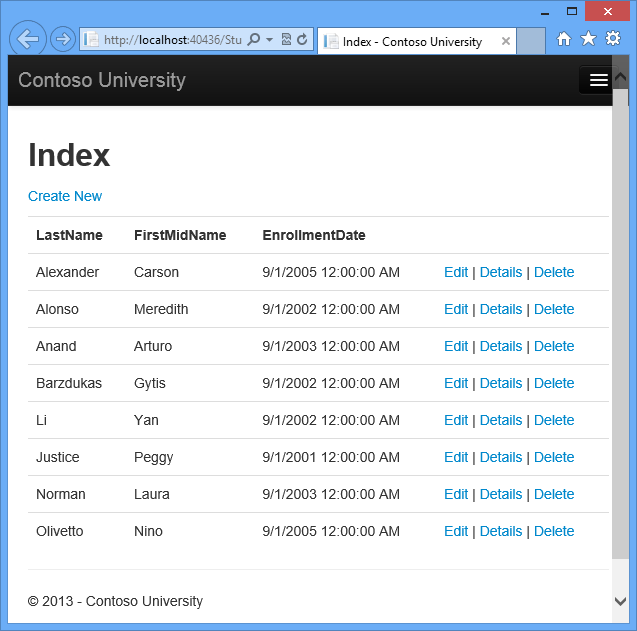
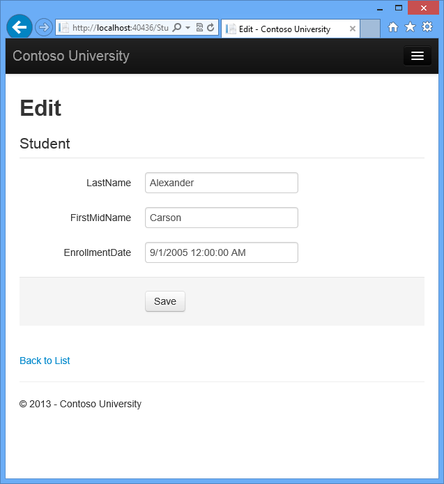
The UI style of this site has been kept close to what's generated by the built-in templates, so that the tutorial can focus mainly on how to use the Entity Framework.
Prerequisites
See Software Versions at the top of the page. Entity
Framework 6 is not a prerequisite because you install the EF NuGet package as part
of the tutorial.
Create an MVC Web Application
Open Visual Studio and create a new C# Web project named "ContosoUniversity".
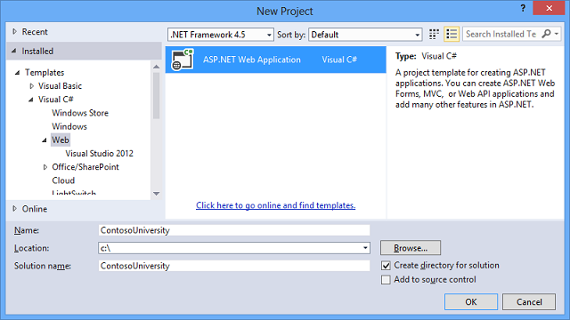
In the New ASP.NET Project dialog box select the MVC template.
If the Host in the cloud check box in the Microsoft
Azure section is selected, clear it.
Click Change Authentication.
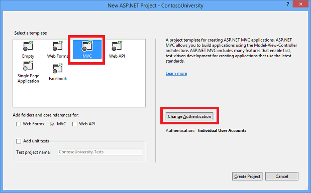
In the Change Authentication dialog box, select No Authentication, and then click OK. For this tutorial you won't be requiring users to log on or restricting access based on who's logged on.
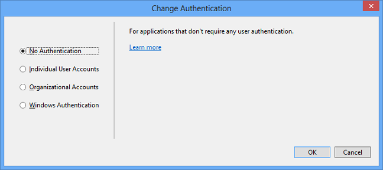
Back in the New ASP.NET Project dialog box, click OK to
create the project.
Set Up the Site Style
A few simple changes will set up the site menu, layout, and home page.
Open Views\Shared\_Layout.cshtml, and make the following changes:
- Change each occurrence of "My ASP.NET Application" and "Application
name" to "Contoso University".
- Add menu entries for Students, Courses, Instructors, and Departments,
and delete the Contact entry.
The changes are highlighted.
<!DOCTYPE html>
<html>
<head>
<meta charset="utf-8" />
<meta name="viewport" content="width=device-width, initial-scale=1.0">
<title>@ViewBag.Title - Contoso University</title>
@Styles.Render("~/Content/css")
@Scripts.Render("~/bundles/modernizr")
</head>
<body>
<div class="navbar navbar-inverse navbar-fixed-top">
<div class="navbar-inner">
<div class="container">
<button type="button" class="btn btn-navbar" data-toggle="collapse" data-target=".nav-collapse">
<span class="icon-bar"></span>
<span class="icon-bar"></span>
<span class="icon-bar"></span>
</button>
@Html.ActionLink("Contoso University", "Index", "Home", new { area = "" }, new { @class = "navbar-brand" })
<div class="nav-collapse collapse">
<ul class="nav">
<li>@Html.ActionLink("Home", "Index", "Home")</li>
<li>@Html.ActionLink("About", "About", "Home")</li>
<li>@Html.ActionLink("Students", "Index", "Student")</li>
<li>@Html.ActionLink("Courses", "Index", "Course")</li>
<li>@Html.ActionLink("Instructors", "Index", "Instructor")</li>
<li>@Html.ActionLink("Departments", "Index", "Department")</li>
</ul>
</div>
</div>
</div>
</div>
<div class="container">
@RenderBody()
<hr />
<footer>
<p>© @DateTime.Now.Year - Contoso University</p>
</footer>
</div>
@Scripts.Render("~/bundles/jquery")
@Scripts.Render("~/bundles/bootstrap")
@RenderSection("scripts", required: false)
</body>
</html>
In Views\Home\Index.cshtml, replace the contents of the file with the
following code to replace the text about ASP.NET and MVC with text about
this application:
@{
ViewBag.Title = "Home Page";
}
<div class="jumbotron">
<h1>Contoso University</h1>
</div>
<div class="row">
<div class="col-md-4">
<h2>Welcome to Contoso University</h2>
<p>Contoso University is a sample application that
demonstrates how to use Entity Framework 6 in an
ASP.NET MVC 5 web application.</p>
</div>
<div class="col-md-4">
<h2>Build it from scratch</h2>
<p>You can build the application by following the steps in the tutorial series on the ASP.NET site.</p>
<p><a class="btn btn-default" href="http://www.asp.net/mvc/tutorials/getting-started-with-ef-using-mvc/">See the tutorial »</a></p>
</div>
<div class="col-md-4">
<h2>Download it</h2>
<p>You can download the completed project from the Microsoft Code Gallery.</p>
<p><a class="btn btn-default" href="http://code.msdn.microsoft.com/ASPNET-MVC-Application-b01a9fe8">Download »</a></p>
</div>
</div>
Press CTRL+F5 to run the site. You see the home page with the main menu.
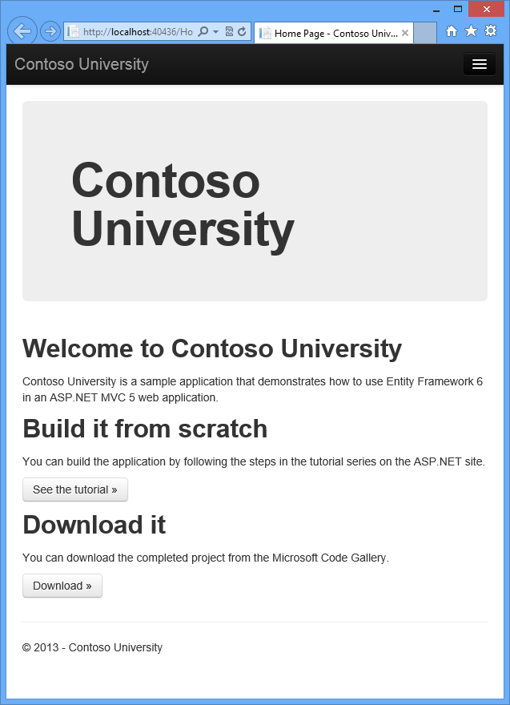
Install Entity Framework 6
From the Tools menu click NuGet Package Manager
and then click Package Manager Console.
In the Package Manager Console window enter the following
command:
Install-Package EntityFramework
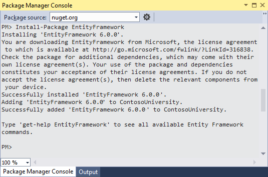
The image shows 6.0.0 being installed, but NuGet will install the latest version of Entity Framework (excluding pre-release versions), which as of the most recent update to
the tutorial is 6.1.1.
This step is one of a few steps that this tutorial has you do manually, but
which could have been done automatically by the ASP.NET MVC scaffolding
feature. You're doing them manually so that you can see the steps required to
use the Entity Framework. You'll use scaffolding later to create the MVC
controller and views. An alternative is to let scaffolding automatically install
the EF NuGet package, create the database context class, and create the
connection string. When you're ready to do it that way, all you have to do is
skip those steps and scaffold your MVC controller after you create your entity
classes.
Create the Data Model
Next you'll create entity classes for the Contoso University application.
You'll start with the following three entities:
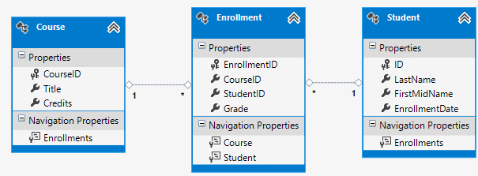
There's a one-to-many relationship between Student and Enrollment entities, and there's a one-to-many relationship between Course and Enrollment entities. In other words, a student can be enrolled in any number of courses, and a course can have any number of students enrolled in it.
In the following sections you'll create a class for each one of these entities.
Note If you try to compile the project before you finish creating all of these entity classes, you'll get compiler errors.
The Student Entity
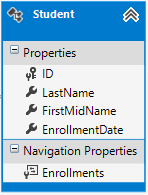
In the Models folder, create a class file named Student.cs and replace the
template code with the following code:
using System;
using System.Collections.Generic;
namespace ContosoUniversity.Models
{
public class Student
{
public int ID { get; set; }
public string LastName { get; set; }
public string FirstMidName { get; set; }
public DateTime EnrollmentDate { get; set; }
public virtual ICollection<Enrollment> Enrollments { get; set; }
}
}
The ID property will become the primary key column of the database table that corresponds to this class. By default, the Entity Framework interprets a property that's named ID or classnameID as the primary key.
The Enrollments property is a navigation property. Navigation properties hold other entities that are related to this entity. In this case, the Enrollments property of a Student entity will hold all of the Enrollment entities that are related to that Student entity. In other words, if a given Student row in the database has two related Enrollment rows (rows that contain that student's primary key value in their StudentID foreign key column), that Student entity's Enrollments navigation property will contain those two Enrollment entities.
Navigation properties are typically defined as virtual so that they can take advantage of
certain Entity Framework functionality such as lazy loading. (Lazy loading will be explained later, in the Reading Related Data tutorial later in this series.)
If a navigation property can hold multiple entities (as in many-to-many or one-to-many relationships),
its type must be a list in which entries can be added, deleted, and
updated, such as ICollection.
The Enrollment Entity

In the Models folder, create Enrollment.cs and replace the existing code with the following code:
namespace ContosoUniversity.Models
{
public enum Grade
{
A, B, C, D, F
}
public class Enrollment
{
public int EnrollmentID { get; set; }
public int CourseID { get; set; }
public int StudentID { get; set; }
public Grade? Grade { get; set; }
public virtual Course Course { get; set; }
public virtual Student Student { get; set; }
}
}
The EnrollmentID property will be the primary key; this entity
uses the classnameID pattern instead of ID by
itself as you saw in the Student entity. Ordinarily you would
choose one pattern and use it throughout your data model. Here, the variation
illustrates that you can use either pattern. In a later tutorial, you'll you'll
see how using ID without classname makes it easier to
implement inheritance in the data model.
The Grade property is an
enum. The question mark after the Grade type declaration indicates that the Grade property is
nullable. A grade that's null is different from a zero grade — null means a grade
isn't known or hasn't been assigned yet.
The StudentID property is a foreign key, and the corresponding navigation property is Student. An Enrollment entity is associated with one Student entity, so the property can only hold a single Student entity (unlike the Student.Enrollments navigation property you saw earlier, which can hold multiple Enrollment entities).
The CourseID property is a foreign key, and the corresponding navigation property is Course. An Enrollment entity is associated with one Course entity.
Entity Framework interprets a property as a foreign key property if it's named
<navigation property name><primary key property name> (for example,
StudentID for the Student navigation property
since the Student entity's primary key is ID).
Foreign key properties can also be named the same simply <primary key
property name> (for example, CourseID since the
Course entity's primary key is CourseID).
The Course Entity

In the Models folder, create Course.cs, replacing the
template code with the following code:
using System.Collections.Generic;
using System.ComponentModel.DataAnnotations.Schema;
namespace ContosoUniversity.Models
{
public class Course
{
[DatabaseGenerated(DatabaseGeneratedOption.None)]
public int CourseID { get; set; }
public string Title { get; set; }
public int Credits { get; set; }
public virtual ICollection<Enrollment> Enrollments { get; set; }
}
}
The Enrollments property is a navigation property. A Course entity can be related to any number of Enrollment entities.
We'll say more about the
DatabaseGenerated attribute in
a later tutorial in this series. Basically, this attribute lets you enter
the primary key for the course rather than having the database generate it.
Create the Database Context
The main class that coordinates Entity Framework functionality for a given data model is the database context class. You create this class by deriving from the
System.Data.Entity.DbContext class. In your code you specify which entities are included in the data model. You can also customize certain Entity Framework behavior. In this project, the class is named SchoolContext.
To create a folder in the ContosoUniversity project, right-click the project
in Solution Explorer and click Add, and then
click New Folder. Name the new folder DAL (for Data Access Layer). In that folder create a new class file named SchoolContext.cs, and replace the
template code with the following code:
using ContosoUniversity.Models;
using System.Data.Entity;
using System.Data.Entity.ModelConfiguration.Conventions;
namespace ContosoUniversity.DAL
{
public class SchoolContext : DbContext
{
public SchoolContext() : base("SchoolContext")
{
}
public DbSet<Student> Students { get; set; }
public DbSet<Enrollment> Enrollments { get; set; }
public DbSet<Course> Courses { get; set; }
protected override void OnModelCreating(DbModelBuilder modelBuilder)
{
modelBuilder.Conventions.Remove<PluralizingTableNameConvention>();
}
}
}
Specifying entity sets
This code creates a
DbSet property for each entity set. In Entity Framework terminology, an entity set typically corresponds to a database table, and an entity corresponds to a row in the table.
You could have omitted the DbSet<Enrollment> and
DbSet<Course> statements and it would work the same. The Entity Framework
would include them implicitly because the Student entity
references the Enrollment entity and the Enrollment
entity references the Course entity.
Specifying the connection string
The name of the connection string (which you'll add to the Web.config file
later) is passed in to the
constructor.
public SchoolContext() : base("SchoolContext")
{
}
You could also pass in the connection string itself instead of the name of one
that is stored
in the Web.config file. For more information about options for specifying the
database to use, see
Entity Framework - Connections and Models.
If you don't specify a connection string or the name of one explicitly,
Entity Framework assumes that the connection string name is the same as the
class name. The default connection string name in this example would then be
SchoolContext, the same as what you're specifying explicitly.
Specifying singular table names
The modelBuilder.Conventions.Remove statement in the
OnModelCreating method prevents table names from being pluralized. If you didn't do this, the generated tables
in the database would be named Students, Courses, and Enrollments. Instead, the table names will be Student, Course, and Enrollment. Developers disagree about whether table names should be pluralized or not. This tutorial uses the singular form, but the important point is that you can select whichever form you prefer by including or omitting this line of code.
Set up EF to initialize the database with test data
The Entity Framework can automatically create (or drop and re-create) a database
for you when the application runs. You can specify that this should be done
every time your application runs or only when the model is out of sync with the
existing database. You can also write a Seed method that the
Entity Framework automatically calls after creating the database in order to
populate it with test data.
The default behavior is to create a
database only if it doesn't exist (and throw an exception if the model has
changed and the database already exists). In this section you'll specify that the database
should be dropped and re-created whenever the model changes. Dropping the
database causes the loss of all your data. This is generally OK during
development, because the Seed method will run when the database is
re-created and will re-create your test data. But in production you generally
don't want to lose all your data every time you need to change the database
schema. Later you'll see
how to handle model changes by using Code First Migrations to change the
database schema instead of dropping and re-creating the database.
In the DAL folder, create a new class file named SchoolInitializer.cs
and replace the template code with the
following code, which causes a
database to be created when needed and loads test data into the new database.
using System;
using System.Collections.Generic;
using System.Linq;
using System.Web;
using System.Data.Entity;
using ContosoUniversity.Models;
namespace ContosoUniversity.DAL
{
public class SchoolInitializer : System.Data.Entity. DropCreateDatabaseIfModelChanges<SchoolContext>
{
protected override void Seed(SchoolContext context)
{
var students = new List<Student>
{
new Student{FirstMidName="Carson",LastName="Alexander",EnrollmentDate=DateTime.Parse("2005-09-01")},
new Student{FirstMidName="Meredith",LastName="Alonso",EnrollmentDate=DateTime.Parse("2002-09-01")},
new Student{FirstMidName="Arturo",LastName="Anand",EnrollmentDate=DateTime.Parse("2003-09-01")},
new Student{FirstMidName="Gytis",LastName="Barzdukas",EnrollmentDate=DateTime.Parse("2002-09-01")},
new Student{FirstMidName="Yan",LastName="Li",EnrollmentDate=DateTime.Parse("2002-09-01")},
new Student{FirstMidName="Peggy",LastName="Justice",EnrollmentDate=DateTime.Parse("2001-09-01")},
new Student{FirstMidName="Laura",LastName="Norman",EnrollmentDate=DateTime.Parse("2003-09-01")},
new Student{FirstMidName="Nino",LastName="Olivetto",EnrollmentDate=DateTime.Parse("2005-09-01")}
};
students.ForEach(s => context.Students.Add(s));
context.SaveChanges();
var courses = new List<Course>
{
new Course{CourseID=1050,Title="Chemistry",Credits=3,},
new Course{CourseID=4022,Title="Microeconomics",Credits=3,},
new Course{CourseID=4041,Title="Macroeconomics",Credits=3,},
new Course{CourseID=1045,Title="Calculus",Credits=4,},
new Course{CourseID=3141,Title="Trigonometry",Credits=4,},
new Course{CourseID=2021,Title="Composition",Credits=3,},
new Course{CourseID=2042,Title="Literature",Credits=4,}
};
courses.ForEach(s => context.Courses.Add(s));
context.SaveChanges();
var enrollments = new List<Enrollment>
{
new Enrollment{StudentID=1,CourseID=1050,Grade=Grade.A},
new Enrollment{StudentID=1,CourseID=4022,Grade=Grade.C},
new Enrollment{StudentID=1,CourseID=4041,Grade=Grade.B},
new Enrollment{StudentID=2,CourseID=1045,Grade=Grade.B},
new Enrollment{StudentID=2,CourseID=3141,Grade=Grade.F},
new Enrollment{StudentID=2,CourseID=2021,Grade=Grade.F},
new Enrollment{StudentID=3,CourseID=1050},
new Enrollment{StudentID=4,CourseID=1050,},
new Enrollment{StudentID=4,CourseID=4022,Grade=Grade.F},
new Enrollment{StudentID=5,CourseID=4041,Grade=Grade.C},
new Enrollment{StudentID=6,CourseID=1045},
new Enrollment{StudentID=7,CourseID=3141,Grade=Grade.A},
};
enrollments.ForEach(s => context.Enrollments.Add(s));
context.SaveChanges();
}
}
}
The Seed method takes the database context object as an input
parameter, and the code in the method uses
that object to add new entities to
the database. For each entity type, the code creates a collection of new
entities, adds them to the appropriate DbSet property, and then
saves the changes to the database. It isn't
necessary to call the
SaveChanges method after each group of entities, as is done here, but
doing that helps
you locate the source of a problem if an exception occurs
while the code is writing to the database.
To tell Entity Framework to use your initializer class, add an element
to the entityFramework element in the application Web.config file
(the one in the root project folder), as shown in the following
example:
<entityFramework>
<contexts>
<context type="ContosoUniversity.DAL.SchoolContext, ContosoUniversity">
<databaseInitializer type="ContosoUniversity.DAL.SchoolInitializer, ContosoUniversity" />
</context>
</contexts>
<defaultConnectionFactory type="System.Data.Entity.Infrastructure.LocalDbConnectionFactory, EntityFramework">
<parameters>
<parameter value="v11.0" />
</parameters>
</defaultConnectionFactory>
<providers>
<provider invariantName="System.Data.SqlClient" type="System.Data.Entity.SqlServer.SqlProviderServices, EntityFramework.SqlServer" />
</providers>
</entityFramework>
The context type specifies the fully qualified context class
name and the assembly it's in, and the databaseinitializer type specifies
the fully qualified name of the initializer class and the assembly it's in.
(When you don't want EF to use the initializer, you can set an attribute on the
context element: disableDatabaseInitialization="true".)
For more information, see
Entity Framework -
Config File Settings.
As an alternative to setting the initializer in the Web.config file
is to do it in code by adding a Database.SetInitializer statement
to the Application_Start method in in the Global.asax.cs file.
For more information, see
Understanding Database Initializers in Entity Framework Code First.
The application is now set up so that when you access the database for the
first time in a given run of the
application, the Entity Framework compares
the database to the model (your SchoolContext and entity classes). If there's a
difference, the application drops and re-creates the database.
Note: When you
deploy an application to a production web server, you must remove or disable code that
drops and re-creates the database. You'll do that in a later tutorial in
this series.
Set up EF to use a SQL Server Express LocalDB database
LocalDB is a lightweight version of the SQL Server Express Database Engine.
It's easy to install and configure, starts on demand, and runs in user mode. LocalDB runs in a special execution mode of SQL Server Express that enables you to
work with databases as .mdf files. You can put LocalDB database files
in the App_Data folder of a web project if you want to be able
to copy the database with the project. The
user instance feature in SQL Server Express also
enables you to work with .mdf files, but the user instance feature is
deprecated; therefore, LocalDB is recommended for working with .mdf
files. In Visual Studio 2012 and later versions, LocalDB is installed by default
with Visual Studio.
Typically SQL Server Express is not used for production web applications.
LocalDB in particular is not recommended for production use with a web
application because it is not designed to work with IIS.
In this tutorial you'll work with LocalDB. Open the
application Web.config file and add a connectionStrings element
preceding the
appSettings element, as shown in the following example. (Make sure you update the
Web.config file in the root project folder. There's also a
Web.config file is in the
Views subfolder that you don't need to update.)
<connectionStrings>
<add name="SchoolContext" connectionString="Data Source=(LocalDb)\v11.0;Initial Catalog=ContosoUniversity1;Integrated Security=SSPI;" providerName="System.Data.SqlClient"/>
</connectionStrings>
<appSettings>
<add key="webpages:Version" value="3.0.0.0" />
<add key="webpages:Enabled" value="false" />
<add key="ClientValidationEnabled" value="true" />
<add key="UnobtrusiveJavaScriptEnabled" value="true" />
</appSettings>
The connection string you've added specifies
that Entity Framework will use a
LocalDB database named ContosoUniversity1.mdf. (The database doesn't exist yet; EF will create it.)
If you wanted the database to be created in your App_Data folder, you could add
AttachDBFilename=|DataDirectory|\ContosoUniversity1.mdf to the connection string. For more
information about connection strings, see
SQL Server Connection Strings for ASP.NET Web Applications.
You don't actually have to have a connection string in the Web.config
file. If you don't supply
a connection string, Entity Framework will use a default one based on your
context class. For more information, see
Code First to a New
Database.
Creating a Student Controller and Views
Now you'll create a web page to display data, and the
process of requesting the data will automatically trigger
the creation of the
database. You'll begin by creating a new controller. But before you do that,
build the project to make the model and context classes available to MVC
controller scaffolding.
Right-click the Controllers folder in
Solution Explorer, select Add, and then click
New Scaffolded Item.
In the Add Scaffold dialog box,
select MVC 5 Controller with views, using Entity Framework.
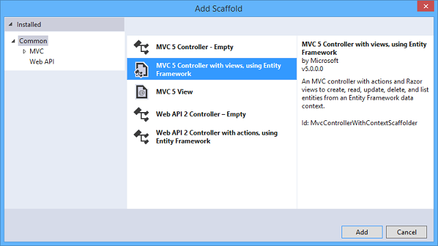
In the Add Controller dialog box, make the following selections and then click
Add:
- Model class: Student (ContosoUniversity.Models). (If you don't see this option in the drop-down list, build the project and try again.)
- Data context class: SchoolContext (ContosoUniversity.DAL).
- Controller name: StudentController (not
StudentsController).
- Leave the default values for the other fields.
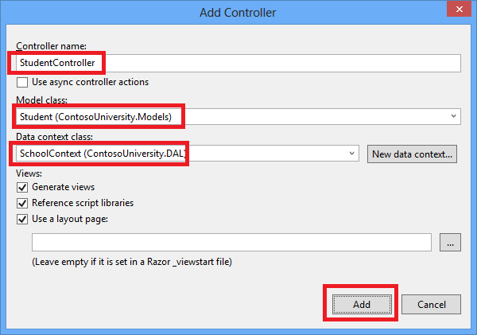
When you click Add, the scaffolder creates a
StudentController.cs file and a set of views (.cshtml files) that work with
the controller. In the future when you create projects that use Entity
Framework you can also take advantage of some additional functionality of
the scaffolder: just create your first model class, don't create a
connection string, and then in the Add Controller box
specify new context class. The scaffolder will create your
DbContext class and your connection string as well as the controller
and views.
-
Visual Studio opens the Controllers\StudentController.cs file. You see a class variable has been created that instantiates a database context object:
private SchoolContext db = new SchoolContext();
The Index action method gets a list of students from the
Students entity set by reading the Students property of the database context instance:
public ViewResult Index()
{
return View(db.Students.ToList());
}
The Student\Index.cshtml view displays this list in a table:
<table>
<tr>
<th>
@Html.DisplayNameFor(model => model.LastName)
</th>
<th>
@Html.DisplayNameFor(model => model.FirstMidName)
</th>
<th>
@Html.DisplayNameFor(model => model.EnrollmentDate)
</th>
<th></th>
</tr>
@foreach (var item in Model) {
<tr>
<td>
@Html.DisplayFor(modelItem => item.LastName)
</td>
<td>
@Html.DisplayFor(modelItem => item.FirstMidName)
</td>
<td>
@Html.DisplayFor(modelItem => item.EnrollmentDate)
</td>
<td>
@Html.ActionLink("Edit", "Edit", new { id=item.ID }) |
@Html.ActionLink("Details", "Details", new { id=item.ID }) |
@Html.ActionLink("Delete", "Delete", new { id=item.ID })
</td>
</tr>
}
-
Press CTRL+F5 to run the project. (If you get a "Cannot create Shadow Copy"
error, close the browser and try again.)
Click the Students tab to see the test data that the
Seed method inserted. Depending on how narrow your browser window is,
you'll see the Student tab link in the top address bar or you'll have to click
the upper right corner to see the link.

View the Database
When you ran the Students page and the application tried to access the database,
EF saw that there was no database and so it created one, then it ran the seed
method to populate the database with data.
You can use either Server Explorer or SQL Server Object
Explorer (SSOX) to view the database in Visual Studio. For this tutorial you'll use
Server Explorer. (In Visual Studio Express editions earlier
than 2013, Server Explorer is called Database
Explorer.)
Close the browser.
-
In Server Explorer, expand Data Connections,
expand School Context (ContosoUniversity), and then expand
Tables to see the tables in your new database.
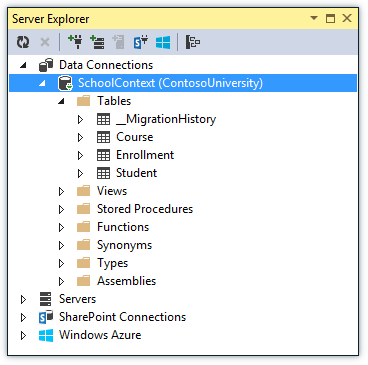
-
Right-click the Student table and click Show
Table
Data to see the columns that were created and the rows that were
inserted into the table.
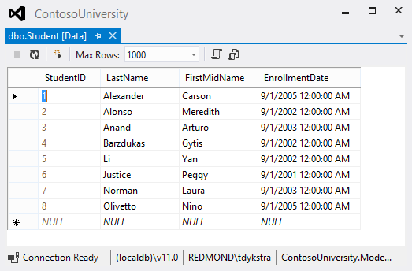
Close the Server Explorer connection.
The ContosoUniversity1.mdf and .ldf database files are in
the C:\Users\<yourusername> folder.
Because you're using the DropCreateDatabaseIfModelChanges
initializer, you could now make a change to the Student class, run
the application again, and the database would automatically be re-created to
match your change. For example, if you add an EmailAddress property
to the Student class, run the Students page again, and then look at
the table again, you will see a new EmailAddress column.
Conventions
The amount of code you had to write in order for the Entity Framework to be able to create a complete database for you is minimal because of the use of conventions, or assumptions that the Entity Framework makes. Some of them have already been noted
or were used without your being aware of them:
- The pluralized forms of entity class names are used as table names.
- Entity property names are used for column names.
- Entity properties that are named
ID or classnameID are recognized as primary key properties.
- A property is interpreted as a foreign key property if it's named
<navigation property name><primary key property name> (for example,
StudentID for the Student navigation property
since the Student entity's primary key is ID).
Foreign key properties can also be named the same simply <primary key
property name> (for example, EnrollmentID since the
Enrollment entity's primary key is EnrollmentID).
You've seen that conventions can be overridden. For example, you specified that table names shouldn't be pluralized,
and you'll see later how to explicitly mark a property as a foreign key
property. You'll learn more about conventions and how to override them in the Creating a More Complex Data Model tutorial later in this series.
For more information about conventions, see
Code First Conventions.
Summary
You've now created a simple application that uses the Entity Framework and SQL Server
Express LocalDB to store and display data. In the following tutorial you'll learn how to perform basic CRUD (create, read, update, delete) operations.
Please leave feedback on how you liked this
tutorial and what we could improve. You can also request new topics at
Show
Me How With Code.
Links to other Entity Framework resources can be found in
ASP.NET
Data Access - Recommended Resources.